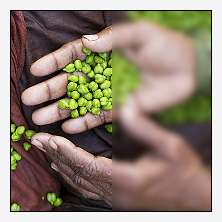

The blur command (abbreviated: -b) replaces every pixel in an image with a weighted average that includes the pixel itself (the center pixel, having the greatest weight) and neigboring pixels, each weighted in a way that become progressively weaker the further a neighboring pixel is from the center pixel. In the Gaussian form of this command, a Gaussian distribution determines rate of drop-off of the weights. The std_variation parameter of this command controls the extent of the distribution and, indirectly, the rate of drop-off.
The blur command is implemented through a convolution, the kernel being either a Gaussian distribution or a less computationally intensive approximation. This command shares quite a bit of basic machinery with the -convolve command and much of the inner workings of the blur command may be found there.
Informally, the blur command smears images, replacing abrupt transitions in color or intensity with more gradual transitions. Artists frequently employ the blur command to soften noise, usually at the expense of sharp edges. In many cases, the -smooth command is the better noise management tool, as it preserves edges, though it is a computationally expensive tool and its effective use sometimes depends on a subtle use of its parameters. In contrast, blur is a fast tool and easy to use; it may very well serve the purposes at hand.
The format of the command is:
-blur std_variation>=0[%],_boundary={ 0=dirichlet | 1=neumann },_kernel={ 0=quasi-gaussian (faster) | 1=gaussian }
The blur command has a general implementation that functions with images possessing depth — that is, images that represent three dimensional solids or images that record two dimensional surfaces that change with time. To G'MIC, the distinction is largely immaterial. When operating on images with more than one slice, the blur command operates over a spherical neighborhood instead of a circular one. As a practical manner, this can be a source of quickly composed animation effects; the clip on the left illustrates the concept. The command that made this video is very straightforward:
gmic 360,240,300,3 -noise[-1] 0.02,2 -blur[-1] 6,0,1 -normalize[-1] 0,255 -split[-1] z -output /path/to/your/animation.avi
gmic 360,240,300,3... )-noise[-1] 0.02,2... ). Since we conjured up three channel slices, these pixels will be red, green or blue, a tedious color combination, but sufficient for demonstration purposes. If you scrub through the image volume at this point in the pipeline (insert -display after -noise), the animation would have the appearance of dirty film, with red, green and blue spots flashing hither and yon in space and time....-blur[-1] 6,0,1...) is the heart of the matter; it smears these single pixel flashes across height, width and depth, making blur-balls. This clip stems from a standard variation of six, making blobs about a dozen pixels around in space and time. One could see these pixels wax, pass through maximum intensity and wane in about half a second. Using larger a standard variation value slows the pace of variation; the enlarged blobs mixing into one another, giving rise to pastels. We used the Dirichlet flag for black vignetting around the edges, but it also gave us a free fade-in and fade-to-black. We happened to use a genuine Gaussian kernel but the quasi version works just as well. ...-normalize[-1] 0,255...). Notice that the right hand decoration references only one image on the stack; that image has, we recall, a depth of 300 slices, but is still only one image in G'MIC terms. In preparation for output, we split our single, three hundred slice image along the depth axis (z) into three hundred single slice images, necessary for the -output command (-split[-1] z). We do not decorate the -output command with an image selection. This induces the output command to send the entire image stack to the output file. The -output command recognizes the 'avi' extension as a video container format, in this case the Audio Video Interleaved format common to Microsoft Windows platforms. The blur command is one among a large family of blurring commands, the others more specialized in their effects or purposes. Closely related to this command are -blur_xyz, -blur_xy, -blur_x, -blur_y, and -blur_z commands, each which allow the standard variation to be independently set along each axis and, in the latter four, restrict blurring to one or two axes. In particular, -blur_z is useful for making animated twinkling stars: sharp in the image plane, but waxing and waning along the temporal dimension.
Garry Osgood